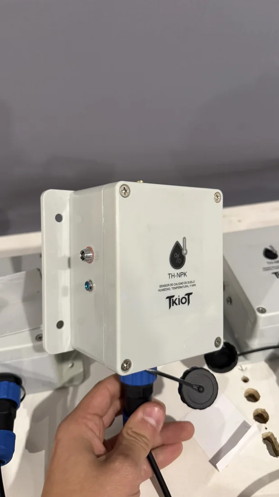

Producción y ensamblaje de electrónica
Un diseño validado todavía no es un equipo operando. Entre una cosa y la otra está la producción: ensamblar, probar y dejar cada unidad en condiciones de salir a terreno.

La serie que nadie te quiere fabricar
Necesitas cuarenta unidades. Las fábricas grandes parten en mil y las chicas no tienen cómo garantizarte que la unidad treinta salga igual que la primera.
Y cuando sí consigues quien las haga, aparece el otro problema: llegan ensambladas pero sin probar. El que descubre la falla es el cliente final, en terreno, con el equipo ya instalado.
Nosotros fabricamos en ese rango y probamos cada unidad antes de que salga.
Del diseño a la unidad lista para instalar
Producción con trazabilidad, en volúmenes que sí se pueden tomar.
Ensamblaje de placas
Montaje de componentes de superficie y de through-hole, con el cuidado que pide la electrónica de instrumentación.
Series cortas y medianas
Trabajamos desde decenas de unidades, el rango que suele quedar fuera de la industria grande.
Control de calidad
Inspección y prueba unidad por unidad. Lo que sale de aquí salió funcionando, no salió armado.
Integración y carcasa
Montaje en gabinete, sellado y conectorización según el ambiente donde va a operar.
Pruebas de campo
Cuando el proyecto lo amerita, acompañamos la puesta en marcha en el lugar de instalación.
Una producción ordenada
Abastecimiento
Paso 1Aseguramos los componentes antes de comprometer la fecha de producción.
Ensamblaje
Paso 2Montaje de las placas con control sobre cada etapa del proceso.
Prueba unitaria
Paso 3Cada unidad se enciende y se prueba contra el comportamiento esperado.
Entrega
Paso 4Unidades listas para instalar, con la documentación que corresponda.
Lo que nos preguntan antes de partir
¿Cuál es el mínimo de unidades que fabrican?
Trabajamos desde prototipos y series de decenas de unidades. No tenemos un mínimo alto, y ese suele ser el motivo por el que nos buscan.
¿Pueden fabricar un diseño que no es de ustedes?
Sí, si viene con documentación suficiente. Si falta documentación, podemos levantarla como paso previo.
¿Prueban las unidades antes de entregar?
Sí, unidad por unidad. Es parte del servicio, no un adicional.
¿Cuánto demora una producción?
Depende del volumen y de la disponibilidad de los componentes, que es la variable menos predecible. Por eso aseguramos el abastecimiento antes de comprometer fecha.
¿Fabrican en Chile?
El ensamblaje y la prueba se hacen acá, en la Región de Valparaíso. Eso acorta mucho los tiempos de respuesta cuando algo hay que corregir.
Otros servicios
Conversemos el proyecto
Cuéntanos qué hay que fabricar y en qué volumen. Evaluamos y te respondemos con un alcance concreto.